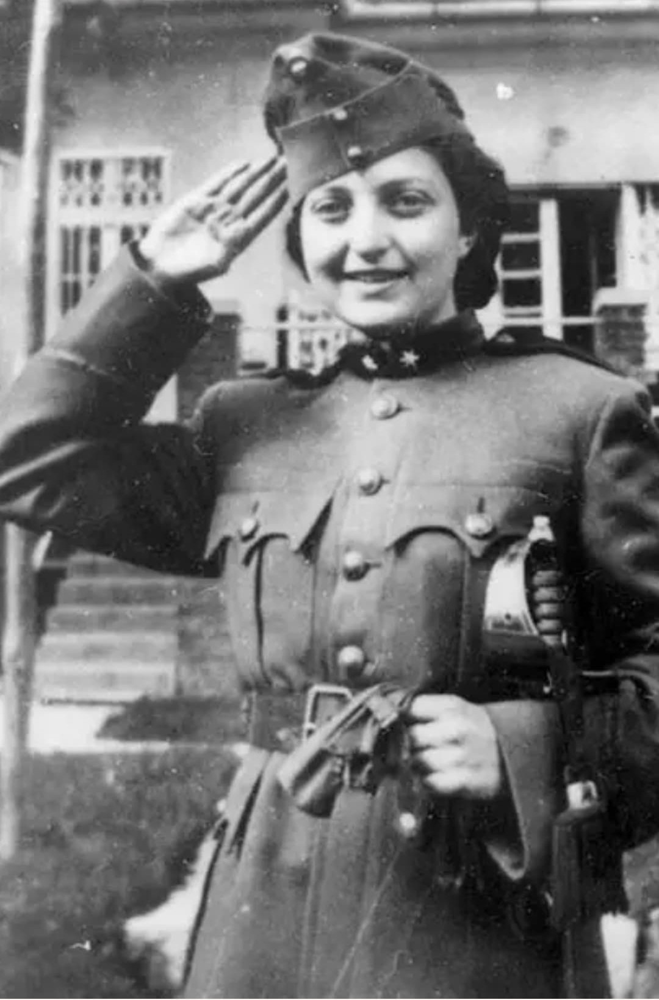

Hannah Szenes en uniforme, saluant, avant sa mission en Europe occupée (1944).
Nom : Hannah Szenes (Szenesh)
Dates : 17 juillet 1921 – 7 novembre 1944
Nationalité : Hongroise / Juive
Organisation : SOE britannique – Résistance juive
Hannah Szenes est l’une des figures les plus marquantes de la Résistance juive durant la Seconde Guerre mondiale. Poétesse et volontaire, elle rejoint la Palestine mandataire puis s’engage dans une unité de parachutistes formée par les Britanniques pour infiltrer l’Europe occupée.
Son courage et son destin tragique en font une héroïne internationale.
En 1944, Szenes est parachutée en Yougoslavie avec pour objectif d’entrer clandestinement en Hongrie afin d’aider les Juifs menacés par les déportations.
Capturée peu après son infiltration, elle subit interrogatoires et tortures sans jamais révéler les informations sur son unité ou ses camarades.
Refusant de trahir la Résistance, elle est condamnée à mort par un tribunal militaire hongrois. Elle est exécutée le 7 novembre 1944, à l’âge de 23 ans.
Sa dignité face à la mort est devenue un symbole de courage et de fidélité.
Hannah Szenes est aujourd’hui célébrée en Israël, en Hongrie et dans de nombreux pays comme une figure majeure de la Résistance juive.
Ses poèmes, retrouvés après sa mort, sont devenus des textes emblématiques de la mémoire de la Shoah.